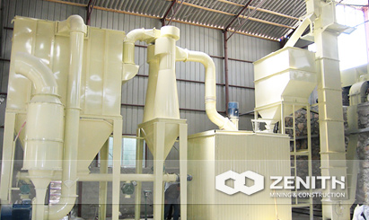
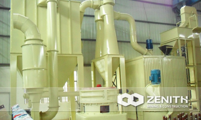
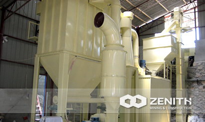
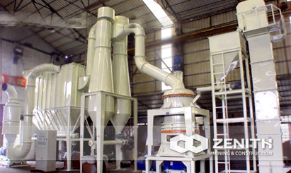

- 
- 
- 
- 
XZM Ultrafine Mill
Zenith's XZM Ultrafine Mill is widely used for micron powder production. The output size can reach 2500mesh (5um). It is suitable to grind the material with middle and low hardness, moisture below 6%, and the material should be non-explosive and non-flammable, such as: calcite, chalk, limestone, dolomite, kaolin, mica, magnetite, iolite, vermiculite, meerschaum, diatomite, barite, gypsum, graphite, fluorite, phosphate ore, potassium ore pumice, etc. The size of the finished product can be adjusted between 325-2500 mesh.
XZM Ultrafine Mill working principle
Bulk materials are crushed by jaw crusher to the desired size, and then the elevator sends them to the storage hopper. The vibrating feeder evenly sends materials into the host and continuously grinding in mill room, after grinding, the powder will flow up by the wind machine, and classified by the classifier, the standard powder will flow through the bypass pipe into the powder collector, the collection is separated by a valve discharge, and this is the final product. Airflow flow through the top back pipe of the bypass collector to centrifugal fan, the air system is closed loop negative pressure that ensured the security of production site.
XZM Ultrafine Mill Benefits and advantages
- The body connected to the base of all soft contact without rigid contact, and this avoids the body vibration to the analyzer, improved the accuracy of the analysis.
- The base made of high strength ductile cast iron Ductile cast iron has the performance of damping force of molten steel, and good impact resistance.?
- The coupling of the elastic sleeve is used in the main unit and the gearbox, which avoided the phenomenon of easily breaking nylon pin, thus improving the reliability of equipment.
- Analyzer machine applies high-density blade. The classifier uses high-density blade that can increase the fineness of powders and the production capacity. Practice shows that in the case of velocity remained unchanged, the density of the leaves can increase the fineness of the finished products. In other words, in the case of the same finesse, high-density blade is driven by a lower rate than that of low density, thus reducing air resistance and increasing production. Adopting a new structure of the blade wheel prevented the escape of the coarse powders.
The tacnology data
| Name & Model | XZM221 | XZM232 | XZM236 | |
|---|---|---|---|---|
| Ring roll number (pcs) | 21 | 32 | 36 | |
| Working diameter (mm) | Φ800 | Φ900 | Φ1000 | |
| Grinding rill and roller path number (pcs) | 1X3 | 1×4 | 1×4 | |
| Revolving Speed (rmin) | 230-240 | 200-220 | 180-200 | |
| Max feed size (mm) | ≤10 | ≤20 | ≤20 | |
| Final size (mesh) | 325-2500 | 325-2500 | 325-2500 | |
| Output (kgh) | 400-4500 | 400-5500 | 400-7500 | |
| contour dimension (mm) | 13000×3000×5800 | 14700×4800×8600 | 18000×4600×8600 | |
| Whole machine capacity (kw) | 144-165 | 185-204 | 263-290 | |
| Main motor | Model | YB2-250M-4 | YB2-280M-8 | YB2-315L1-6 |
| Power (kw) | 55 | 45×2 | 110 | |
| Rotate speed (rmin) | 1440 | 750 | 990 | |
| Analytical engine (FM motor) | Model | Y180M-4 | Y180L-4 | Y100L1-4 |
| Power (kw) | 18.5 | 22 | 30 | |
| Rotate speed (rmin) | 1440 | 1440 | 1440 | |
| Blower motor | Model | Y225M-2 | Y250M-2 | Y280M-2 |
| Power (kw) | 45 | 55 | 75 | |
| Rotate speed (rmin) | 2940 | 2940 | 2940 | |
| Elevator | Bucket model | TH-200 | TH-200 | TH-300 |
| Motor model | Y100L-4 | YB2-100L2-4 | YB2-112M-4 | |
| Motor power (kw) | 3 | 3 | 4 | |
| Rotate speed (rmin) | 1440 | 1440 | 1440 | |
| Hammer Crusher | Hammer Crusher model | PC300×400 | PC400×600 | PC400×600 |
| Motor model | YB2-160M-4 | YB2-180M-4 | YB2-180M-4 | |
| Power (kw) | 11 | 18.5 | 18.5 | |
| Rotate speed (rmin) | 1440 | 1440 | 1440 | |
| Magnetic vibrating feeder | Model | GZ1F | GZ1F | |
| Power (kw) | 0.06 | 0.06 | ||
| Electrical machine | Model | LS159×1050 | ||
| Power (kw) | 2.2 | |||
| Discharge valve | Discharge valve model | ZJD-200 | ZJD-200 | ZJD-200 |
| Motor model | YB2-80M2-4 | YB2-80M2-4 | YB2-80M2-4 | |
| Power (kw) | 0.75×2 | 0.75×2 | 0.75×3 | |
| Rotate speed (rmin) | 1440 | 1440 | 1440 | |
| Pulse dust collectors | Model | DMC120-II model | DMC144-II model | DMC184-II model |
| Air compressor | Air compressor Model | KSH100D-7.5KW | KSH240D-15KW | KSH240D-15KW |
| Motor model | YB2-132M-4 | YB2-160L-4 | YB2-160L-4 | |
| Power (kw) | 7.5 | 15 | 15 | |
| Rotate speed (rmin) | 1440 | 1440 | 1440 | |